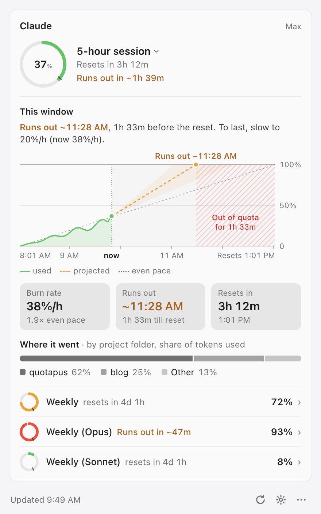

Know how much AI
you have left.
quotapus shows your Claude and Cursor usage in the Mac menu bar and forecasts when you'll run out.
curl -fsSL https://raw.githubusercontent.com/VladUdri/quotapus/main/install.sh | bashmacOS · Apple Silicon and Intel · free and open source (MIT). Paste the command into Terminal.

Will I run out?
A forecast from your recent pace, such as "Runs out in ~1h 39m". Shown only when the limit would be reached before the quota resets.
A chart you can read
The whole quota window at a glance: usage so far, the projected path, and the pace that would make it last.
Where it went
See which project folders used your Claude tokens. Read locally from Claude Code's logs. Token counts only, never prompt text.
Stays out of the way
A gauge in the menu bar, a click for details, and notifications at the thresholds you choose. If a refresh fails, the last values stay visible and are marked as out of date.
Private
quotapus uses the logins Claude Code and Cursor already have on your Mac and connects only to Anthropic and Cursor. It never modifies those logins, has no analytics, and needs no account.
Getting started
- Run the install command in Terminal. It installs quotapus into
~/.quotapusand starts it. Node is not required. - Sign in to Claude Code or Cursor if you haven't already.
- Click the gauge icon in the menu bar. Use the gear for settings, including launch at login.
Manage it later with quotapus start | stop | update | uninstall.
Works with
Claude via Claude Code: 5-hour session, weekly, and per-model weekly limits.
Cursor: monthly plan usage and on-demand spend.
Cursor support is experimental. Both providers use unofficial usage endpoints, which may change.